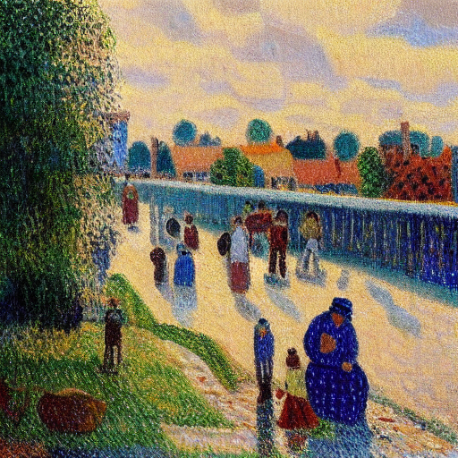

1. Introduction
Recent advancements in generative diffusion models have spurred the development of "concept erasure" techniques designed to systematically remove copyrighted styles, sensitive attributes, or specific semantic entities from the model's weights. Among the most mathematically elegant are closed-form projection methods (such as UCE and SPEED).
These methods operate by solving a closed-form system of linear equations directly on the U-Net's cross-attention matrices. They force the text embeddings of target concepts ($C$) to project to a neutral unconditional representation ($V^*$), while simultaneously preserving the projection of a set of protected anchor concepts ($P$) through a geometric "null-space."
In this post, we present a rigorous empirical investigation into the true capabilities and fundamental limitations of these projection mechanisms.
2. The Superficiality Hypothesis
Our first investigation sought to understand whether closed-form erasure truly destroys visual representations, or merely avoids them by severing the text-to-image conditional pathway.
We measured the parameter footprint ($| \Delta W |$) left behind by SPEED across different layers of the cross-attention blocks. We discovered that despite successful behavioral erasure (e.g., the model stops generating "Van Gogh" when prompted), the parameter updates are almost entirely concentrated in the Value and Output projection matrices, rather than the Key and Query matrices.
Finding: Avoidance, Not Destruction
Closed-form methods act as a "filter" at the conditioning step. They mathematically neutralize the specific text embeddings of the target concepts, but the deep, entangled visual representations of those concepts remain largely intact within the network. This superficiality suggests that while the method is fast, the concepts are not truly unlearned from the manifold.
3. The Robustness of Null-Space (Sparse Erasure)
If the erasure is merely a superficial filter, how well does the null-space projection protect innocent, semantically adjacent concepts? To test this, we simultaneously erased three highly correlated Impressionist artists: Van Gogh, Picasso, and Monet (N=3). We then measured the CLIP drift of un-targeted "canary" neighbors: Gauguin, Seurat, and Pissarro.
| Artist | Role | CLIP Drift (N=3) |
|---|---|---|
| Gauguin | Neighbor (Canary) | 0.108 |
| Seurat | Neighbor (Canary) | 0.049 |
| Pissarro | Neighbor (Canary) | 0.075 |
| Rembrandt | Control (Style-Far) | 0.114 |


Finding: Genuine Robustness for Small N
The null-space projection is extraordinarily robust when erasing sparse concept sets. The un-targeted canaries drifted less than the style-far negative control (Rembrandt). Because the erasure is superficial, it perfectly protects neighbors because it mathematically guarantees orthogonality without disturbing the deeper manifold.
4. The Saturation Horizon (Rank Saturation)
While closed-form projections perform flawlessly on sparse edits, what happens when we stress-test the mathematical limits of the cross-attention matrix? We designed a concentrated mass erasure experiment, incrementally erasing 5, 10, 20, and 40 highly correlated Impressionist painters, while strictly withholding our canaries (Gauguin, Seurat, Pissarro) from the erasure set.
| Concept | Role | Drift (N=10) | Drift (N=20) | Drift (N=40) |
|---|---|---|---|---|
| Pissarro | Neighbor (Canary) | 0.125 | 0.165 | 0.253 |
| Impressionist | Supertype | 0.070 | 0.049 | 0.035 |
| Rembrandt | Control | 0.093 | 0.132 | 0.113 |

Finding: Capacity Collapse via Rank Saturation
As N scales within a dense, highly entangled semantic neighborhood, the column space of the target embeddings approaches the span of the entire local subspace. The mathematical rank of the cross-attention matrix saturates. The projection loses the degrees of freedom required to maintain orthogonality between the 40 erased targets and their innocent nearest neighbors.
The result is a catastrophic, localized manifold collapse. Un-targeted neighbors like Pissarro (Drift: 0.253) are completely destroyed as collateral damage.
5. Conclusion
Closed-form projection mechanisms like SPEED represent an elegant, training-free approach to concept filtering. For sparse, linearly independent edits, their geometric null-space effectively guarantees the preservation of adjacent concepts.
However, they are fundamentally bottlenecked by Rank Saturation. When deployed against dense, entangled semantic clusters, the closed-form mathematics collapse the very neighborhoods they aim to protect. Future architectures seeking to achieve robust, large-scale machine unlearning must move beyond superficial cross-attention filtering and develop mechanisms capable of true mechanistic feature disentanglement.